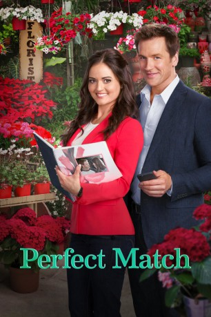

#9810 Eine Perfekte Hochzeit
Alternativ: Perfect Match
 
 IMDB-Wertung: 6.1 / 10
IMDB-Wertung: 6.1 / 10  Metascore: 0
Metascore: 0 
Die alleinerziehende Mutter Jessica (Danica McKellar), eine traditionsbewusste Hochzeitsplanerin, soll mit dem ausgeflippten Eventplaner Adam (Paul Greene) eine Hochzeit organisieren. Klar, dass sich die beiden von der Musik- bis zur Blumenwahl auf rein gar nichts einigen können. Doch dann merken sie langsam, dass sie sich perfekt ergänzen. Sowohl im Job als auch im Privatleben. Gegensätze ziehen sich an: gefühlvolle Romantikkomödie mit "Wunderbare Jahre"-Star Danica McKellar.
Jahr: 2015
Dauer: 82 Minuten
FSK:
Land: USA Studio: The Hallmark ChannelTonspuren: DD5.1 - ,
Untertitel:
Auflösung: 1080p (1920x1080) Größe: 4454 MB
Genre: Drama, Komödie, Liebe
Regisseur:  Ron Oliver
Ron Oliver
Drehbuch: Patricia Resnick
Soundtrack: Peter Allen
Darsteller:
 Danica McKellar als Jessica Summers
Danica McKellar als Jessica Summers- Paul Greene als Adam Parker
- Graham Verchere als Luke Summers
- Elise Gatien als Lucy
 Anthony Konechny als Paul Taylor
Anthony Konechny als Paul Taylor- Linda Gray als Gabby Taylor
 Nelson Wong als Kenny Kwon
Nelson Wong als Kenny Kwon- Nicole Shorrock als Amy
- D. Harlan Cutshall als Burt
- Conchita Campbell als Kate
 Marco Soriano als Sal
Marco Soriano als Sal- Meghan Gardiner als Felicia
- Romuald Hivert als Groom
 Dee Jay Jackson als Minister
Dee Jay Jackson als Minister Beverley Breuer als Francine
Beverley Breuer als Francine- Ian James Hawkins als Reverend
- Erica Tremblay als Madison
- Robin Givens als Wedding Coordinator (uncredited)
 John Specogna als Churchgoer (uncredited)
John Specogna als Churchgoer (uncredited)- Natalie von Rotsburg als Mother of the Bride
- Tori Katongo als Bride
- Kevin als Howard the Dog
- Draco McKellar Verta als Young Luke (uncredited)
Datei: X:\2015(N-Z)\Perfekte Hochzeit, Eine (2015, FSK, 1920x1080).mkv seit 29.10.2018
Festplatte: HD 2015(A-Z)
 Es gibt insgesamt 161 Filme in der Gruppe '2015(N-Z)'
Es gibt insgesamt 161 Filme in der Gruppe '2015(N-Z)'